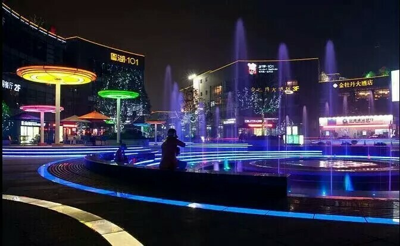

Nan Tong
TongZhou ,ChongChuan
Nantong, jiangsu province, is located in the southeast of jiangsu province, the Yangtze river delta north wing, hereinafter referred to as "tong", nickname the JingHai, ChongZhou, ChongChuan, ZiLang, north of Shanghai, called tongzhou.China's first batch of one of the 14 coastal cities opening to the outside world, east yellow sea, the south of the Yangtze river, and lamps are connected in Shanghai, suzhou, west, north and taizhou, yancheng, "according to the will of jianghai, the conjugate throat" of the north and the south, is known as "north Shanghai".Nantong set "gold coast" and "golden waterway" advantages in one, with the Yangtze coastline of 226 kilometers.
南通，江苏省地级市，位于江苏东南部，长江三角洲北翼 ，简称“通”，别称静海、崇州、崇川、紫琅、北上海，古称通州。中国首批对外开放的14个沿海城市之一，东抵黄海，南望长江，与上海、苏州灯火相邀，西、北与泰州、盐城接壤，“据江海之会、扼南北之喉”，被誉为“北上海” 。南通集“黄金海岸”与“黄金水道”优势于一身，拥有长江岸线226公里。
